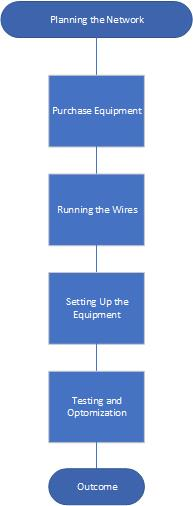
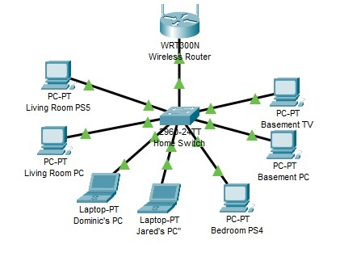

Project Overview
This project involved setting up a wired and wireless home network in my 1200 sq ft ranch-style house. The goal was to provide reliable internet connectivity for multiple users and devices, while eliminating rental fees from the ISP. Below, you'll find the detailed write-up and project flowchart that outline the process.
Detailed Write-Up
For a comprehensive description of the project, including planning, challenges, and outcomes, read the full write-up:
Project Flowchart

This flowchart outlines the sequence of steps taken to complete the network setup.
Equipment Used
- Router: Arris Modem-Router Combo
- Switch: Netgear 8-Port Gigabit Ethernet Switch
- Cables: Cat 5 Ethernet Cables
- Tools: Cable crimper, cable tester, fish tape, drill
Steps Taken
- Planning: Mapped the house layout for optimal cable runs and device placement.
- Purchasing Equipment: Selected modem-router combo, switch, and tools for scalability and cost-efficiency.
- Running Wires: Drilled access points, ran Cat 5 cables, and crimped connectors.
- Installing Wall Plates: Mounted wall plates for Ethernet connections in each room.
- Testing: Verified connectivity and optimized network speed.
Challenges and Solutions
-
Challenge: Running cables through walls and floors.
Solution: Used fish tape to navigate cables through tight spaces. -
Challenge: Ensuring all cables were properly connected.
Solution: Tested each cable with a network tester before finalizing connections.
Outcome
The network setup was successfully completed, providing stable wired and wireless connections to all key rooms while saving $180 annually in rental fees.
- Wired speeds: Up to 250 Mbps in all rooms.
- Improved gaming and streaming reliability for all users.
Skills Demonstrated
- Network Design and Planning
- Hardware Installation: Cable management, crimping, and wall plate installation
- Troubleshooting and Connectivity Testing
- Cost Management and Optimization
Additional Resources
Explore additional files and diagrams used in this project:
Network Diagram: This diagram illustrates the layout and connections of the home network setup, including key components like the router, switch, and devices.

This .pkt file is a working Cisco Packet Tracer file that was used to simulate the setup of the home network. Cisco Packet Tracer is a powerful tool for designing and testing network topologies, and this simulation allowed me to plan, test configurations, and troubleshoot potential issues before implementation.